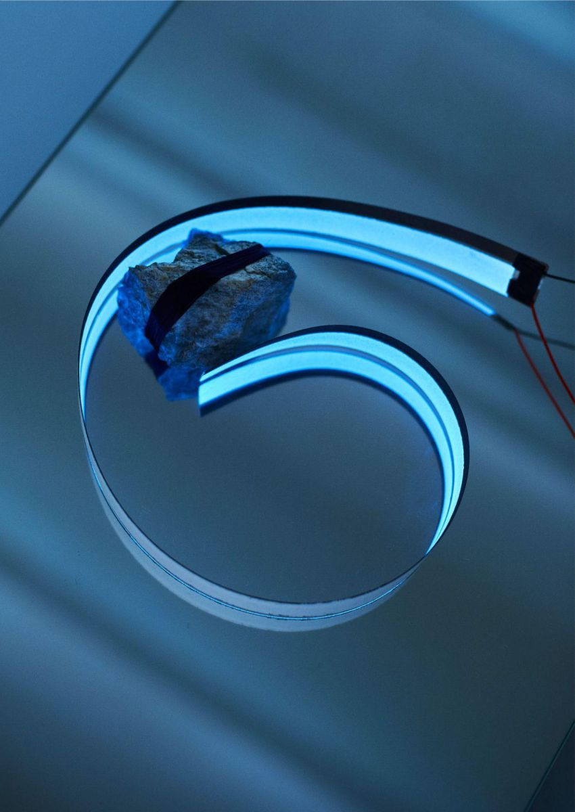
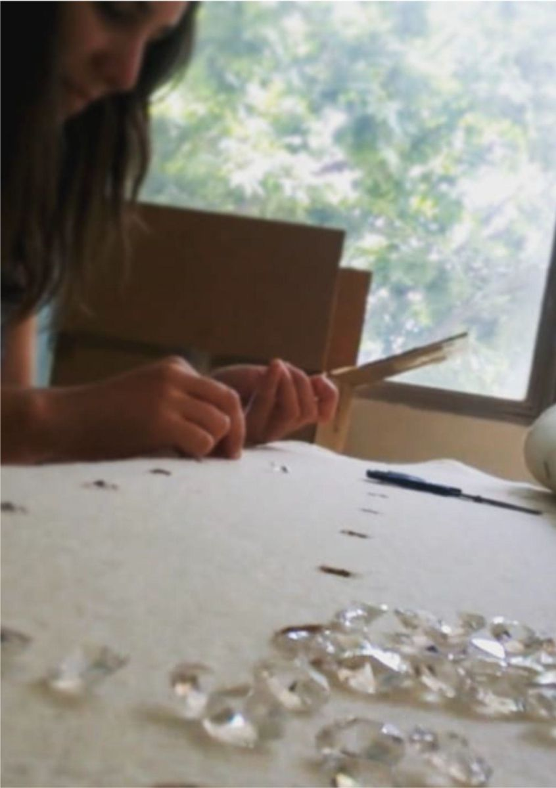
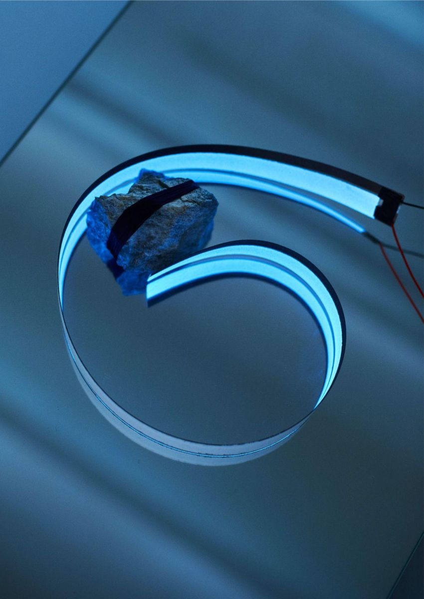
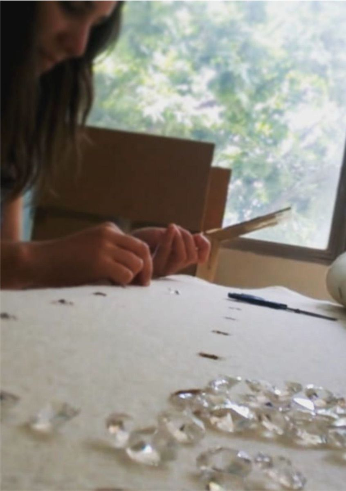

Sobre mí
Soy diseñadora de indumentaria graduada en la Universidad de Buenos Aires (UBA, Argentina), con trayectoria en diseño, patronaje y procesos textiles.
Coordino la Diplomatura en Diseño de Indumentaria de la Universidad Nacional de San Luis (UNSL, Argentina) y soy docente de la Escuela Argentina de Moda (EAModa, Argentina). Cuento con el trayecto de formación pedagógica de la UNSL, certificación oficial en Audaces y capacitación en Fab Textiles, Fab Lab Barcelona.
Integro educación, diseño e innovación para desarrollar propuestas claras, creativas y técnicamente sólidas.
Docencia y Talleres
Universidad Nacional de San Luis (Argentina)
Coordino la Diplomatura de extensión en Diseño de Indumentaria, participando en el diseño del programa, planificación de contenidos y dictado de clases. Los trabajos son realizados por alumnos.
Talleres de Patronaje
Desarrollo talleres teórico-prácticos orientadas a comprender el proceso completo de diseño y construcción de prendas. Los trabajos son realizados por alumnos.
Escuela Argentina de Moda (EAModa)
Docente de la Materia Práctica proyectual en 1er año de la Tecnicatura en Diseño de Moda e Indumentaria. Trabajo contenidos vinculados a la representación digital de indumentaria, articulando herramientas técnicas y desarrollo creativo. Los trabajos son realizados por alumnos.
Talleres de Serigrafía Textil
He desarrollado seminarios teórico-prácticos de serigrafía textil orientados a la experimentación, el aprendizaje técnico y la producción colectiva. Los trabajos son realizados por alumnos.
Proyectos
Hilanda - Diseño Sustentable
Proyecto de investigación y diseño centrado en la reutilización de caucho reciclado y la exploración de procesos textiles artesanales. Marca certificada por el Ministerio de Medio Ambiente de San Luis, Argentina. Resolución n° 61- PGA-2012.
Fab Textiles - Fab Lab Barcelona
Proyecto de investigación enfocado en la exploración de nuevas materialidades y tecnologías aplicadas al diseño de indumentaria y textil. El trabajo integra experimentación, prototipado y desarrollo de superficies innovadoras.
Barcelona Design Week 12° Edición
Colaboración en el proyecto expositivo Refraccions de la diseñadora Cristina Noguer, presentado en el marco de la Barcelona Design Week, Design Unique Piece.
 




Curriculum Vitae
Puedes ver mi CV a continuación o descargarlo haciendo clic en el botón:
Contacto
Email: persiaaldana@gmail.com
Instagram: @aldana.persia
LinkedIn: Aldana Persia